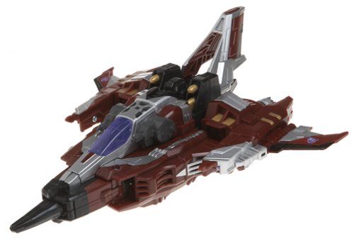
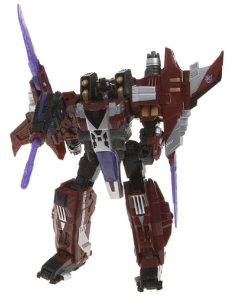

Starscream
vs. Vector Prime w/ Safeguard (Toys "R" Us Exclusive)
Starscream
vs. Vector Prime w/ Safeguard (Toys "R" Us Exclusive)
Price
: $35 (U.S.)
Overall Rating
: 8.9
Starscream


Allegiance
: Decepticon
Size
: Voyager (Mega)
Homeworld
: Earth according to the
package, Cybertron according to the storyline
Difficulty of Transformation
: Easy
Color Scheme
: Very dark rusty red,
silver, black, and some transparent purple and dull gold
Individual Rating
: 8.4
(NOTE: Because this is a repaint, this is
not a full-blown review. This mainly covers any changes made to the mold
and the color scheme, and merely compares it to Supreme Starscream. For
a review on the mold itself, read the review of Supreme Starscream
here
.)
TRU Starscream's color
scheme is amazing, and puts Supreme Starscream's to shame, quite franky.
The silver-and-rusty-red goes together very well for a Decepticon, and
it's also a homage to G1 Thrust, who came from a slightly-modified mold
of
G1 Starscream
. The gold and purple bits
also meld very well with the primary colors and make this toy quite an
eye-catching piece of plastic. There aren't very many colors on it, but
there doesn't need to be-- Starscream has more than enough varied paint
apps.
This Voyager-sized version,
besides being just smaller than the Supreme mass-retail version of Starscream,
also has several mold changes, which are outlined in the Supreme Starscream
toy review.
Starscream Bio
:
Constantly plotting behind his leader's
back, Starscream is using the Decepticon forces left under his command
on Earth to further his own ambitions. He desires the power granted by
the Planet Key, believing it will finally give him the power to destroy
Megatron and the Autobots. With a mighty array of weapons, including his
fearsome Null ray cannons, he is second to none in aerial combat and skill
with an Energon blade.
Strength: 10.0
Intelligence: 7.5
Speed: 10.0
Endurance: 8.0
Rank: 9.0
Courage: 7.5
Fireblast: 10.0
Skill: 8.0
Vector
Prime w/ Safeguard
Safeguard's Rating
: 6.8
Vector Prime's Rating
: 9.4
Sadly, the TRU-exclusive
version of Vector Prime and his minicon is the EXACT same as the mass-retail
Voyager-class version of him. No changes whatsoever were made. For a full
review of the toy,
click here
.
Vector Prime Bio
:
Vector Prime outmatches Starscream in
wits and strength, but the ancient Autobot is pushed to the limits of even
his incredible power by the demands of the search for the Planet Keys and
the defense of Cybertron from its countless enemies. Forced to use
his remarkable time-traveling abilities to constantly hop between dimensions,
he finds himself weakened during the frequent skirmishes with Decepticon
forces. Nonetheless, he must persevere, for nothing less than the
survival of the Universe is at stake!
Strength: ?
Intelligence: 10.0
Speed: ?
Endurance: 10.0
Rank: ?
Courage: 10.0
Fireblast: 10.0
Skill: 10.0
This set is rather aggravating
for anyone who bought the mass-retail version of Vector Prime; here you
have a GREAT Starscream repaint in a more palatable size, but with a completely
unchanged Vector Prime. The Starscream repaint is very nice, but not $35
nice. Nice as Starscream might look, you'll probably want to pass on this
set if you already have Vector Prime. If you don't however, I highly recommend
this exclusive.
Reviews by Beastbot
(Starscream pictures taken from
Amazon.com
.)
Back to Transformers:
Cybertron Index